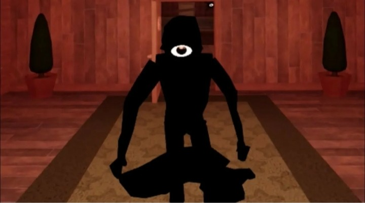

инфо:
- у него есть друг помошник эго зовут скрич он очень раздражает
- встречаеться на 1 и 2 етаже
- встречаеться только 2 раза 1 раз лего 2 раз сложно
- на апрельском обновлении у него была машына и на 2 апрельском обновлении онс тал ретро!
- признаки то что он близко 1: на стенах появляються глаза 2: картины назеваються не чем 3: раш не появляеться
видео прохождения сика 2 етаж
Сили та здібності
- Енергоконтроль – може перетворювати енергію на зброю або захисний щит.
- Телепорт – миттєво переміщується на короткі відстані, залишаючи за собою світловий слід.
- Цифрове злиття – може входити в комп’ютерні системи та керувати ними на рівні коду.
- Сенсор реальності – бачить невидимі потоки енергії, що пов’язують світ людей і цифрових істот.
